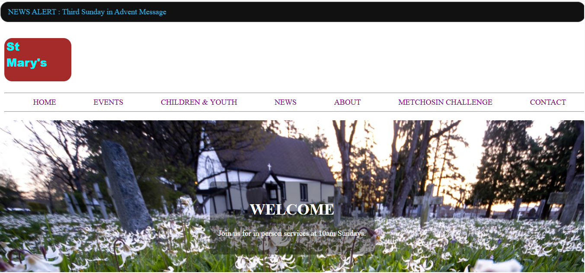

My Projects

E-commerce Website
A simple and user-friendly online marketplace that allows customers to browse products, select the items they want, and submit their order details. After placing an order, users are redirected to WhatsApp to communicate directly with the seller for order confirmation and the next steps. The platform also includes a seller page where vendors can submit product details, pricing, and descriptions before continuing the listing process through WhatsApp.
View Project

Church Website
A modern and informative church website designed to keep members and visitors connected. It features pages for church history, upcoming events, children's and youth ministries, church news, contact information, and the church's location. The website provides an easy way for visitors to learn about the church, stay updated with activities, and find important information.
View Project